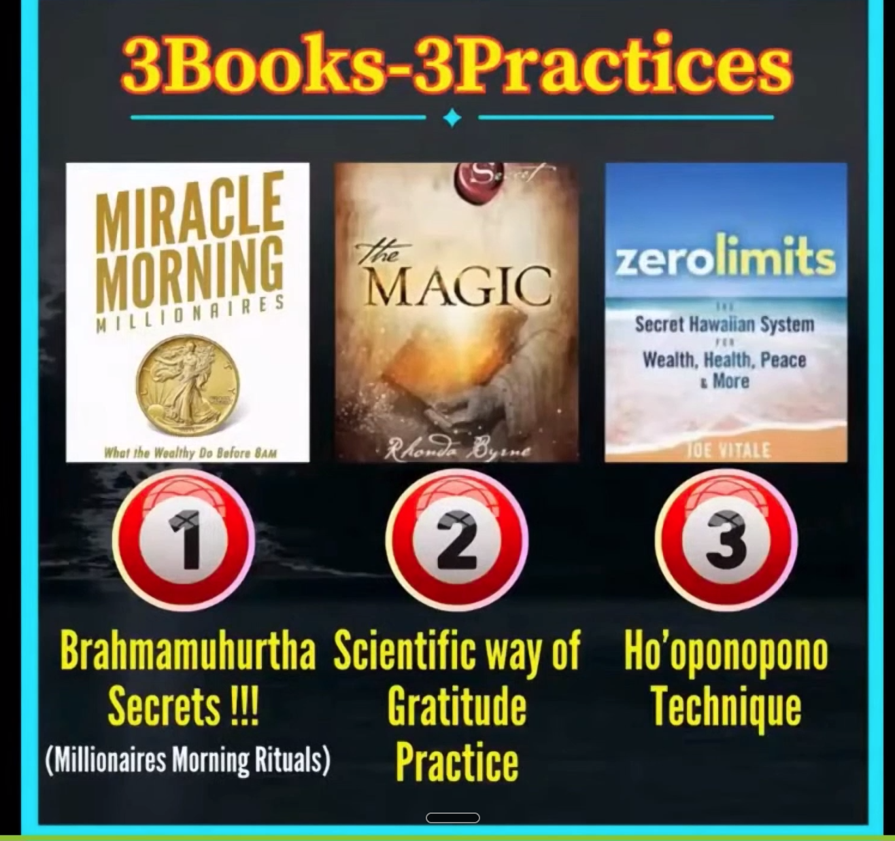
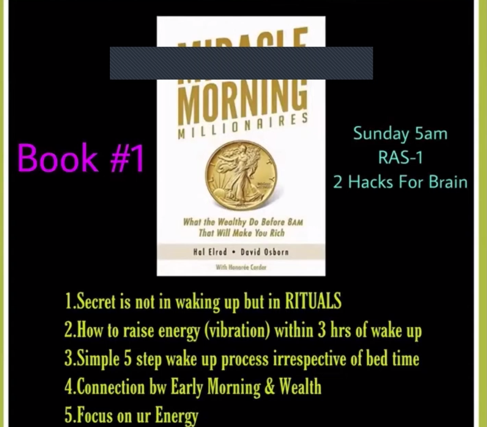
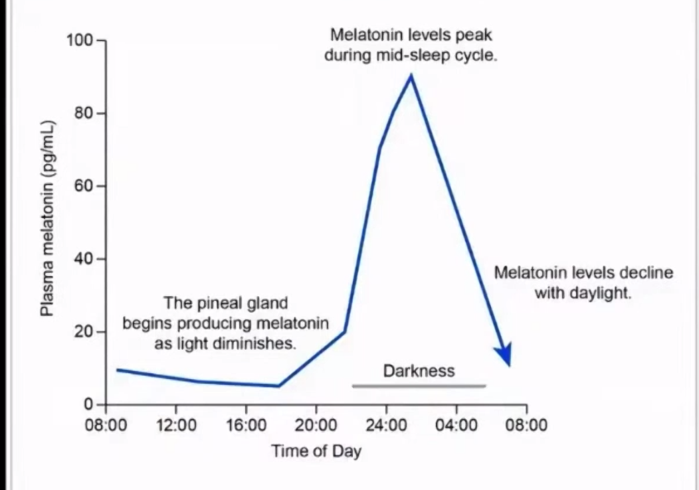
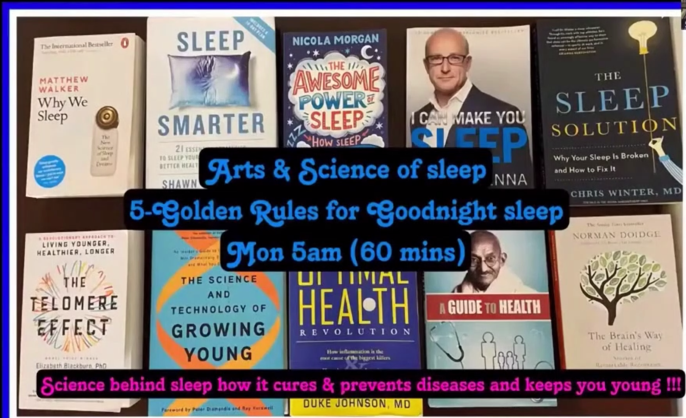
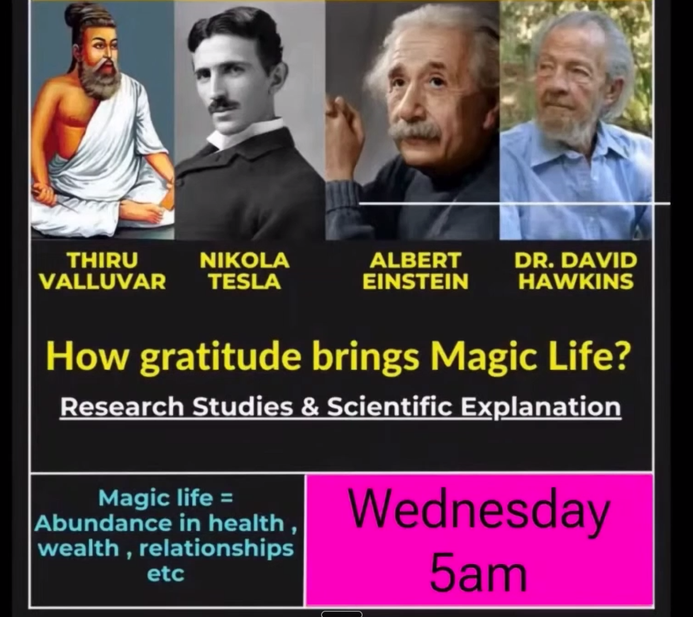
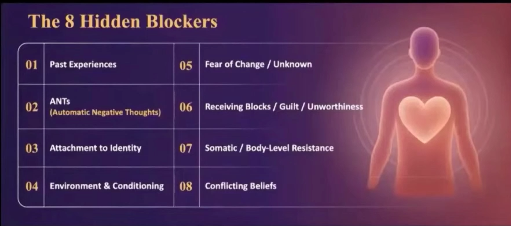
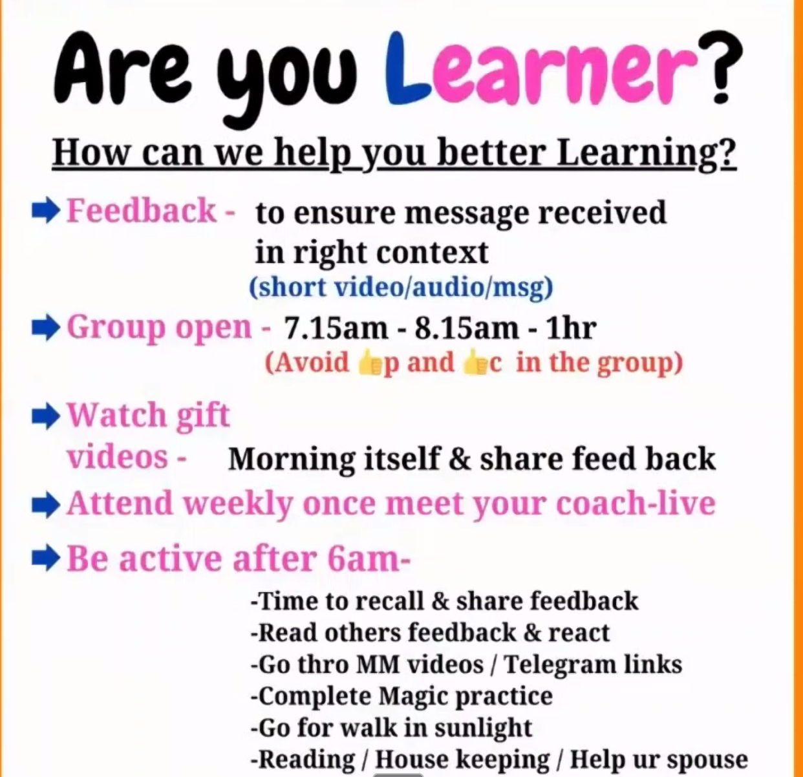

Why — before you join the room.
The intro slide of the entire community. What the group is, who it’s for, what the discipline asks of you, and what to expect on the first morning. Watch this one first.
A 35-day closed program in three books and three practices. For people who already know that the missing thing is not more information — it is the right ritual, repeated at the right hour, under the right discipline.
The intro slide of the entire community. What the group is, who it’s for, what the discipline asks of you, and what to expect on the first morning. Watch this one first.
The follow-up video. Watch this after the intro — it builds on what the first one set up.
The program structure, exactly as it is shown inside the room: three books, three numbered practices, one closed community of practitioners who already know that the missing thing isn't more information.
You will read no books. You will practice three. Each practice is decoded for you in a 5 AM live session, then carried through the rest of the day. Book one teaches the morning. Book two teaches gratitude. Book three teaches clearing.

“What you seek is seeking you.” — Jalaluddin Rumi, 13th c.
A friend chose you, named you, and sent you the link. The room is closed by design; the link travels by hand. Today's session introduces the central metaphor of the next thirty-five days: every problem in your life is a different lock, and a master key exists for every one of them.

The author of Miracle Morning Millionaires, David Osborn, did not study the rich to learn that they wake early. He studied them to learn what they do in the three hours after. The wake-up itself is the doorway. The compounding happens inside.
The five points on this slide are what you will receive in detail during the Sunday session: why the ritual matters more than the alarm, how to raise vibration within three hours of waking, a five-step process that holds regardless of bedtime, the connection between morning energy and wealth, and why focus on energy beats focus on time.
The pineal gland starts producing melatonin when light diminishes. The molecule peaks during the mid-sleep cycle, between roughly 10 PM and 2 AM — the four hours when the body does its most expensive work. If you are awake in this window, none of this work happens.
In this window, melatonin lowers cortisol, tunes carbohydrate metabolism, protects the endothelium, sharpens the immune response, scavenges free radicals, repairs DNA, and protects the neurons. The chemistry of ageing slows. The lifespan extends. Sleep at one in the morning and most of it never arrives.

The Reticular Activating System decides what you notice. Re-program it before the world fills it, and the day brings you what you tuned toward. Sunday's session decodes three brain hacks the wealthy use without naming them — and how to use the brain as an idea generator and problem solver.
This is the session your instructor describes as worth ₹1.5 lakh. It is delivered free, inside this room, in 75 minutes.
The Monday session draws from ten of the most cited sleep books on the table — Walker's Why We Sleep, Shawn Stevenson's Sleep Smarter, Nicola Morgan's Awesome Power of Sleep, Paul McKenna's I Can Make You Sleep, Chris Winter's The Sleep Solution, plus titles on cellular ageing, brain plasticity, and inflammation.
The session compresses the five golden rules for goodnight sleep, and the science behind how sleep cures and prevents disease — and keeps you young. Sixty minutes. One sitting.

Each chapter of Rhonda Byrne’s The Magic is decoded into a 10–15 minute audio. You listen first thing in the morning. You begin the day with the practice. That is all.
The discipline of this book is the audio reply. Your Accountability Partner — your AP — may deny you the next 5 AM link if you have not responded to the audio. The room treats the audio reply as proof that the practice is being done. Without it, the chain breaks.
The first three days — Sunday through Tuesday — are trial. You experience the difference between saying gratitude and feeling gratitude. The teacher of this room calls the difference the size of an ocean.
Wednesday opens the science of gratitude and the Day 2 trial. Thursday begins the Day 1 real practice. Friday is Day 2. Saturday is Day 3. From there, one chapter, one day, until Day 28.

Thiruvalluvar, 2nd century BCE, wrote the calculus of giving and gratitude into 1,330 couplets. Nikola Tesla, in the early 1900s, framed it as frequency. Albert Einstein, in private letters, named the gratitude he held for the hundreds of lives he had borrowed from. Dr. David Hawkins, late 20th century, placed it on a logarithmic scale of consciousness.
The Wednesday session walks the research studies and the scientific explanation behind one statement: magic life equals abundance in health, wealth, relationships.
Once the gratitude practice has bedded in, the room shifts toward money. Thursday is the live session your instructor labels Money Magnet: the science and the rules behind one claim — that anyone, given the right architecture, can become rich.
The session is not a motivational lecture. It is a rule set. Bring a notebook. The session does not repeat.
You have heard of the Law of Attraction. You have probably tried it. For most it does not work. This is because the formula in circulation is half a formula. Book three completes it.

Manifestation requires three forces — intention (a clear thought), emotion (a feeling), alignment (coherence between them). Most people stop here. Most people fail here. Because eight quiet, automatic blockers — stored in the body, stored in the room you grew up in — cancel the signal before it leaves.
The final twenty-one days of the program teach Ho’oponopono — a four-line Hawaiian clearing — to dissolve each blocker, one at a time.
The first practical ritual you receive — tomorrow morning, live — is a ten-minute sequence called Shadchakrabhedan. Your instructor learned it from a cardiologist in Kerala, who taught it not as spirituality but as medicine: a clean way to activate the vagus nerve, shift the body from sympathetic into parasympathetic, and replace stress with energy.
Wake before 4:33. Set the alarm for 4:35 as a safety. By 5 AM you should be sitting upright in front of the screen. The session does not repeat.
A single grid. Every cell is a session. Today is sealed in navy. Tomorrow’s cell is bordered in gold. Future days sit as dashed paper, waiting their turn. As each day lands, its cell fills in.

The group is open between 7:15 and 8:15 AM — one hour, daily. Feedback ensures the message landed in context. The gift videos arrive only after you reply to the audio. Weekly, once, you meet your coach live.
After 6 AM, no return to bed. The morning is the curriculum: recall and share feedback, read other members’ feedback, go through the videos and telegram links, complete the Magic practice, walk in sunlight, read, do housekeeping, help your spouse. This is not advice — it is the structure that produces the result.
The community is free, but it is not casual. Each rule below was written to prevent a specific way the room could collapse. Read them once, and then again before you sleep.
Set the alarm for 4:35 as a safety. If you wake earlier, the alarm finds nothing to ring on.
Multiple groups will get you removed from all of them. Keep one inviter. Save a second admin’s number for emergencies.
Dinner before seven. Light meal. After eight, no light enters your eyes that you would not want inside your sleep.
Your friend, and the 3B3P admin. Pin in WhatsApp. The next morning’s link arrives at 7:30 the night before — only there.
The community exists for transformation, not networking. Strangers who direct-message are removed. Speak to your friend, your admin, the group.
After every session, send what you heard back in your own words. Reading what you wrote is what stores it.
No screenshots, no screen recordings. Anyone who breaks this loses the link permanently. The discipline is what makes the room.
Walk. Read. Write feedback. Practice. Help your family. Sit in sunlight. Do not give the hour back.
When you have benefitted, invite one person whose discipline you trust. The room grows by hand, never publicly.
The Tamil headline on this slide translates to the magic-power of a single book. The line beneath it reads, in spirit: if this one book had never reached you, you would not know how much was missing.
The community circulates this slide for a reason. Most lives are not transformed by ten new habits. They are transformed by one book, read at the right hour, in the right state, in the company of people who are reading with you. The 3B3P room is built around this idea: three books, three practices, fewer than a hundred days.
I was in debt for ten years. For eight of them I paid down a single rupee per stick of borrowing — a brutal arithmetic that began in 2012. In 2010 my friend told me to attend a session by Alan Pease in Australia. The travel cost ₹1.5 lakh I did not have. I went. That session became the turning point. Seven months after applying what I learned, the ocean of debt finished.
What I was given, I give. What I was taught, I teach. The teaching is free; the condition is discipline; the reward is yours. A separate business pays for itself, and from time to time, when it is right for you, an offer appears. It is never the cost of the teaching. The teaching has no cost.
The ten-minute vagus activation. Your first practical ritual, taught live.
Three hacks to keep the brain healthy and re-program the RAS for wealth.
Five golden rules for a good night. Sixty minutes drawn from ten of the most-cited sleep books.
Set the alarm. Pin your friend. Save the admin’s number. Be in one group. Read this page again before you sleep — the brain encodes what it revisits.